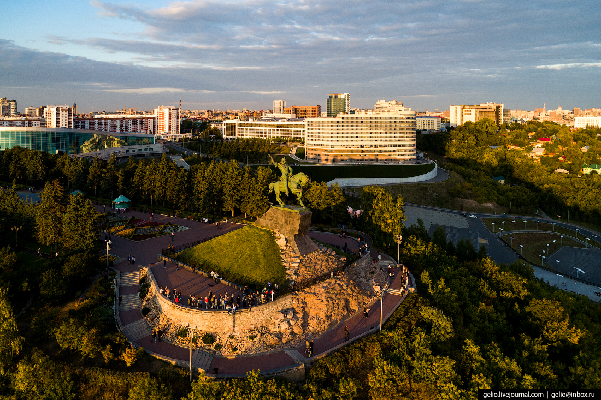

Башкортостану исполнилось целых 100 лет! Образована республика была ещё в 1917, но официально вошла в состав СССР в 1919 году. Конечно, история этой удивительной республики началась в далёкие времена. О них вы можете прочитать на нашем сайте. Дорогой посетитель, если тебе необходимо подготовить реферат о культуре, истории, населении и памятных местах республики Башкорстан, то прошу ознакомится о всей интересующей тебя информации на сайте!
В Башкирии находится 21 город, крупнейший из которых - Уфа. Конечно, Башкортостан получил своё имя от названия его коренного народа - башкиров, но как это ни странно: сейчас в Башкирии живут больше русских, чем башкиров.
А численность народов, проживающих в РБ, насчитывает 4 071 181 человека (2,8% от населения РФ), из них Уфе 1 120 547 человека (27,5% от населения РБ).
Уфа - культурная столица Башкорстана, обладающая историей, которой более 400 лет, побольше узнать о ней Вы можете на нашем сайте.
История республики началась в древние времена, когда на степях края поселились первые племена башкир. Первым их описал арабский миссионер Ибн-Фадлан ещё в 922 году - это стало датой начала башкирской истории. С тех пор коренной народ пережил очень многое: был захвачен Золотой Ордой и пробыл в составе которой более 200 лет, после чего вошёл в состав России; проводил множество восстаний (некоторые были весьма успешными) против власти за ущемление прав; учавствовал в освобождении империи против французов; долго воевал за свою независимость, которую наконец получил в договоре с Советской властью... Всё это давало новый толчок развитию культуры, традиций и, в итоге, сложило сегоднешенее лицо Башкортстана.
На сегодняшний день край представляет собой развитую в сравнении другими федеральными единицами инфрастуктуру, ведущей отраслью которой является нефтепереработка. Таким образом, Республика Башкортостан стала одной из крупнейших нефтеперерабатывающих районов как России, так Европы. Кроме того, большое развитие получило машиностроение, нефтехимия, лесозаготовка и другие отрасли промышленности.